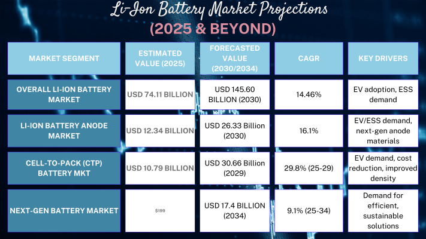
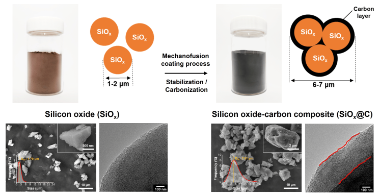
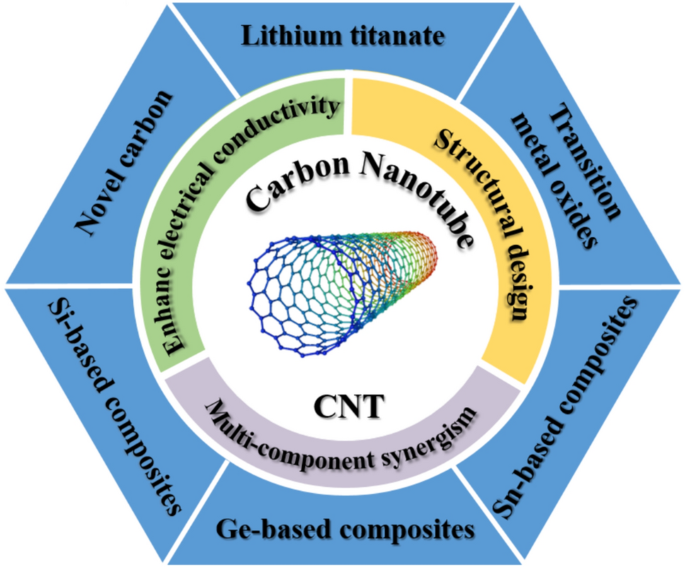
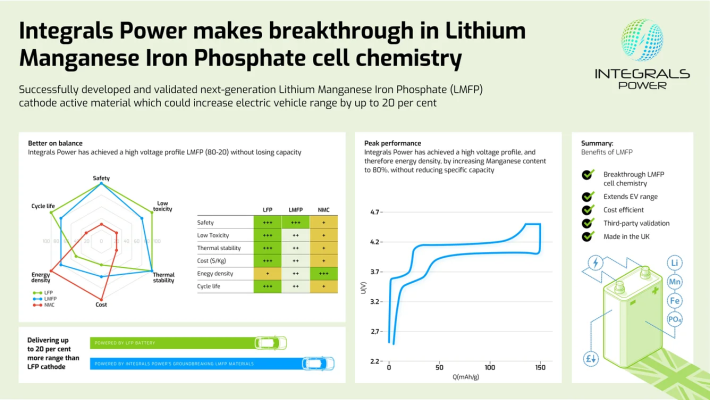
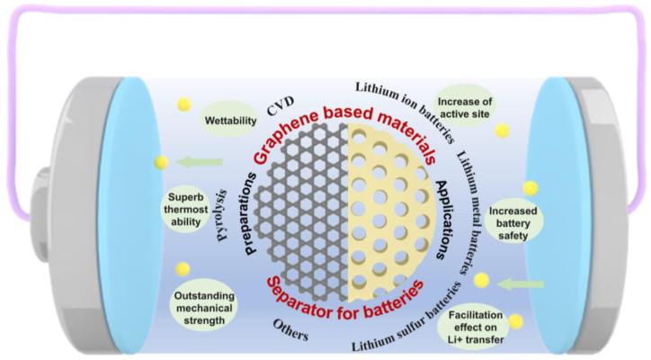
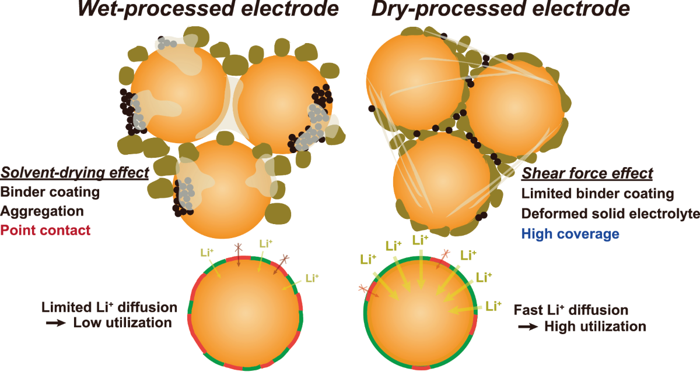
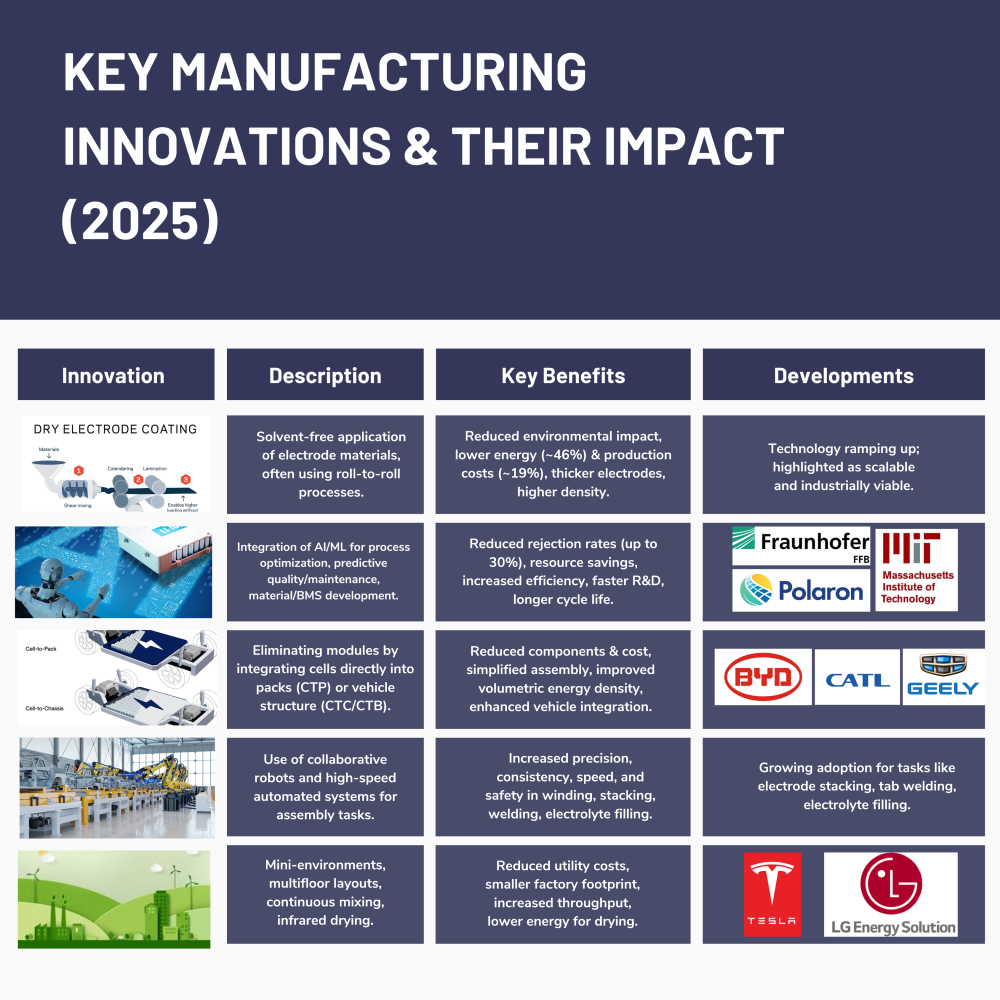

As we move through 2025, the lithium-ion battery industry is undergoing significant transformations driven by technological innovations, sustainability imperatives, and evolving market demands. The global market is experiencing robust growth with new manufacturing processes and materials reshaping the landscape.
This newsletter explores the cutting-edge developments in lithium-ion cell manufacturing, highlighting how silicon anodes, advanced separators, and sustainable production methods are revolutionizing the industry while examining their implications for stakeholders across the value chain.
Market Growth and Industry Transformation
The lithium-ion battery market continues its impressive expansion trajectory in 2025, building upon its estimated value of USD 75.2 billion in 2024. Industry analysts project a compound annual growth rate (CAGR) of 15.8% extending from 2025 through 2034, signaling robust long-term growth prospects for manufacturers and suppliers. This expansion is occurring alongside a notable phase transition in the broader battery industry, characterized by sharply rising demand coupled with ongoing price declines that are making lithium-ion technology increasingly accessible across multiple sectors.
Within this growing ecosystem, the anode segment has emerged as a particularly dynamic subsector. The Lithium-Ion Battery Anode Market grew substantially from USD 10.70 billion in 2024 to USD 12.34 billion in 2025, with projections indicating continued strong performance at a 16.17% CAGR that could see the market reach USD 26.33 billion by 2030. This accelerated growth reflects the critical importance of anode technology in advancing overall battery performance and capabilities.
Li-Ion Battery Market Projections (2025 & Beyond)

Anode Advancements: The Silicon Rush and Sustainable Solutions
A crucial trend shaping the 2025 Li-ion battery landscape is the concerted move towards more diversified and higher-performance anode materials. Traditional graphite anodes are increasingly being supplemented or replaced by innovative alternatives, with silicon emerging as a frontrunner. Silicon's allure lies in its theoretical potential to dramatically increase energy capacity—up to ten times that of graphite—and significantly enhance charging speeds, addressing key consumer demands, especially for EVs.

Silicon anode technology in 2025 encompasses a diverse range of incorporation approaches designed to harness silicon's advantages while mitigating its limitations. These solutions include silicon-carbon composites, silicon oxide material designs, nanostructured silicon, and various silicon deposition methods.
Companies such as Group14 Technologies , Amprius Technologies, Inc. , Samsung SDI (which is targeting a 40% improvement in energy capacity through silicon incorporation), and LG Energy Solution are at the vanguard of silicon anode development.
Advanced Material Solutions for Silicon Integration
The challenges of silicon anode implementation have spurred innovation across the entire battery material ecosystem. Specialized binder systems play a crucial role in accommodating silicon's volume changes during cycling, with both aqueous and non-aqueous formulations competing in the marketplace. Carbon nanotubes (CNTs) have emerged as important additives for enhancing the structural stability and electrical conductivity of silicon anodes.

Cathode Evolution: LFP/LMFP Ascendancy and High-Nickel, Low-Cobalt Futures
The cathode, a critical determinant of a Li-ion battery's performance, cost, and safety, is witnessing a significant evolutionary divergence in 2025. Lithium Iron Phosphate (LFP) cathodes have solidified their position in the market, particularly for mainstream EVs and energy storage systems, owing to their lower cost, superior safety profile, and extended cycle life.
Companies like Integrals Power are showcasing LMFP cells with high manganese content (around 80%) that deliver impressive C-rate performance and capacity retention. Moreover, BYD Blade 2.0 LMFP batteries are reportedly achieving driving ranges of up to 700 km in production vehicles, signaling commercial maturity. The market forecast for LMFP is exceptionally strong, with projections indicating explosive growth in the coming years. This rapid ascent suggests LMFP could capture a notable portion of LFPs market share, especially where a moderate energy density increase is valued, and potentially challenge lower-end Nickel Manganese Cobalt (NMC) chemistries in cost-sensitive segments.

Separator Technology Innovations
Battery separator technology is experiencing a renaissance in 2025, with several breakthrough approaches enhancing the performance, safety, and longevity of lithium-ion cells. Among the most promising developments are graphene-based lithium-ion battery separators from companies like Grabat Graphenano Energy , which demonstrate improvements in charging speed, energy density, and overall battery life. These advanced separators also feature enhanced thermal stability and significantly improved safety characteristics compared to conventional polyolefin materials.

Companies such as Nanoramic, Inc. Laboratories are leveraging nanofiber separators to address short-circuiting risks and thermal runaway events, particularly for high-energy applications like electric vehicles, where safety considerations are paramount.
Ceramic-coated separators represent another significant advancement in the field. Traditional polyethylene (PE) and polypropylene separators-which continue to dominate the market with PE projected to maintain a 37.2% market share in 2025, are being enhanced with ceramic coatings to improve their electrolyte compatibility, chemical resistance, and thermal performance.
The Solid-State Promise: Nearing Commercial Reality?
The separator landscape is further evolving with the emergence of solid-state battery technologies. Companies including QuantumScape and Ionic Materials, Inc are developing entirely new separator paradigms for solid-state batteries, promising step-change improvements in energy density and safety.
Similarly, Nanoramic Laboratories' nanostructured separators aim to capture market share by offering enhanced safety and efficiency characteristics essential for advanced energy storage systems.
Key industry players, including Samsung SDI (which is targeting commercialization of its SSB technology by 2027 and anticipates pilot production of certain technologies by the end of 2025), ProLogium Technology 輝能科技 (also aiming for pilot production by late 2025), QuantumScape , Solid Power, Inc. , LG Energy Solution , and Panasonic Energy Corporation of North America , are making substantial investments in SSB research and development.

Sustainable Manufacturing Breakthroughs
Environmental sustainability has moved from aspiration to imperative in lithium-ion manufacturing, with 2025 marking significant advancements in production methodologies designed to reduce environmental impact. One of the most promising developments is the emergence of dry processing techniques that eliminate harmful solvents from electrode manufacturing.
Conventional lithium-ion electrode fabrication has historically relied on wet coating processes that utilize N-methyl-2-pyrrolidone (NMP)-an environmentally harmful and toxic solvent that substantially increases production costs through drying and recycling requirements.

A notable innovation in this space is the dry press-coating process demonstrated with LiNi0.7Co0.1Mn0.2O2 (NCM712) electrodes. This industrially viable approach combines multiwalled carbon nanotubes (MWNTs) and polyvinylidene fluoride (PVDF) as a dry powder composite with etched aluminum foil as the current collector. Remarkably, the mechanical strength and performance of these dry-press-coated electrodes exceed those of conventional slurry-coated alternatives, enabling high loading (100 mg cm−2, 17.6 mAh cm−2) with an impressive specific energy density of 360 Wh kg−1 and volumetric energy density of 701 Wh L−1.
Key Manufacturing Innovations & Their Impact (2025)

Conclusion
The lithium-ion cell manufacturing industry in 2025 stands at an inflection point where technological innovation, sustainability imperatives, and market growth are converging to reshape the competitive landscape. Silicon anodes, advanced separators, and sustainable manufacturing processes represent the leading edge of this transformation, offering substantial performance improvements alongside reduced environmental impact.
As these technologies mature from laboratory demonstrations to commercial-scale production, they will enable the next generation of electric vehicles, consumer electronics, and grid storage systems. Organizations that successfully navigate this dynamic environment-identifying the most promising technologies and effectively scaling their implementation be well-positioned to capture value in a market projected to experience sustained double-digit growth through the coming decade.